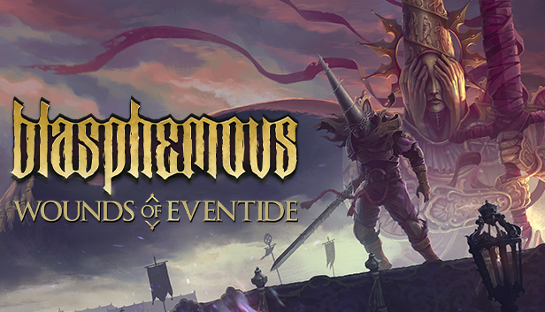
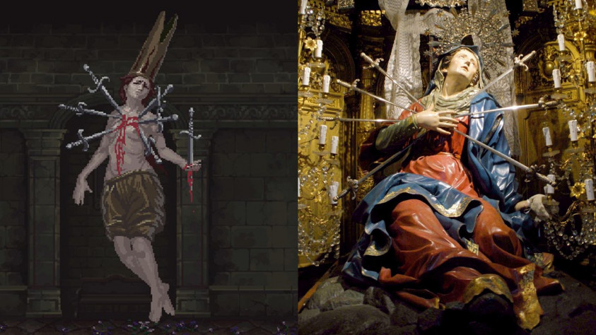
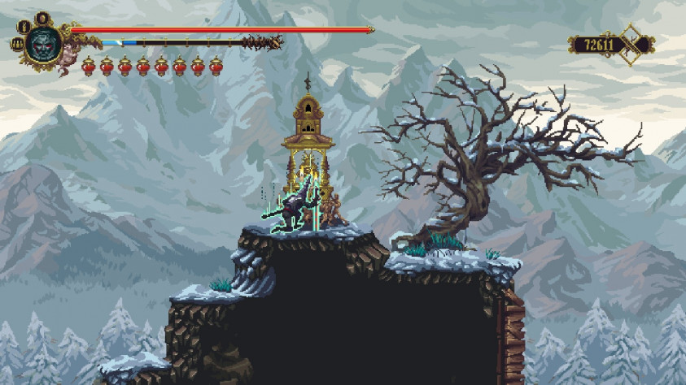
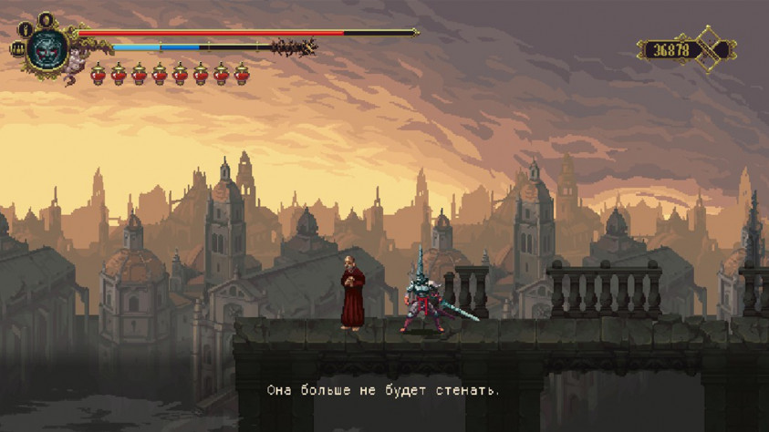
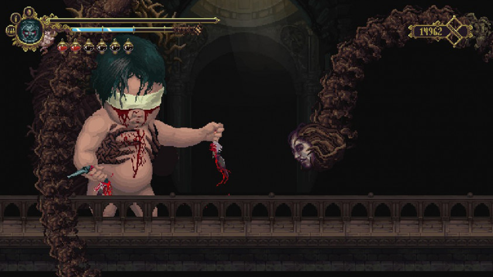
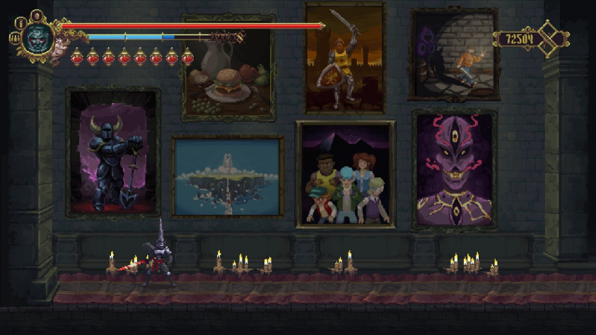

Blasphemous
В наше время очередной метроидванией уже никого не удивишь — настолько жанр растиражирован. Чтобы как-то выделиться, разработчикам нужно придумать что-то по-настоящему цепляющее: удивить доселе невиданными механиками или необычным арт-дизайном. Создатели Blasphemous решили пойти скорее по второму пути. На счету The Game Kitchen, крошечной студии из Севильи, уже был point-and-click-квест The Last Door, так что какой-никакой опыт разработки игр у испанцев имелся.
Трудиться над Blasphemous они начали ещё в ноябре 2016 года. Затем, в 2017-м, последовала успешная кампания на Kickstarter. Настолько успешная, что при изначально запрашиваемой сумме в 50 тысяч долларов разработчики собрали в шесть раз больше — так сильно потенциальным игрокам приглянулись концепция и визуальный стиль проекта.
В новой игре The Game Kitchen трепетно отнеслась к историческому и культурному наследию Севильи, причём вплетено оно так тонко, что если не копать глубоко, то можно даже не заметить в происходящем отсылок к испанским легендам или картинам Франсиско Гойи, приняв всё за сюрреалистичные и мрачные фантазии разработчиков. Однако говорить о Blasphemous можно не только с позиции её эстетики. Это в первую очередь игра, которая заставляет страдать всех: главного героя, эпизодических персонажей и, конечно, самого игрока.
Севильский богохульник
Действие игры разворачивается в землях под названием Кастодия. И не смотрите на то, что в оригинале оно написано как Cvstodia, — это всё стилизация под классическую латынь, и фраз на этом мёртвом языке в игре будет ещё немало. Кастодия — это мир мучений и боли. Найти в нём кого-то счастливого и безмятежного просто невозможно — всё потому, что живущие там люди страдают за грехи Его Святейшества Эскрибара. Много лет назад его наказало Чудо: он был сожжён, а оставшийся пепел заполнил собор, в котором он обитал со своими прислужниками. Годы спустя погребённые в пепле души, включая самого Эскрибара, выбрались оттуда, став ещё более безумными и кровожадными, чем были до своей смерти.
Что до более положительных героев, то одним из них является наш протагонист — Кающийся, безымянный служитель Братства безмолвной печали, принявший обет молчания. Он — единственный, кто выжил в бойне, уничтожившей его соратников, и единственный, кто может спасти мир от страданий.
Если вы думаете, что вся эта история проговаривается в игре прямым текстом, то спешу вас разочаровать (или обрадовать): нет, «лор» тут подаётся порционно. Информацию о мире и его обитателях мы вычитываем в описаниях предметов (среди которых есть даже части чужих тел) и пытаемся понять из нечастых диалогов. Последние, впрочем, ясности не добавляют — персонажи бормочут о вине и покаянии, а нам остаётся только слушать их с ничего не выражающим лицом.

Разработчики рассказывают, что спрятали физиономию протагониста под маской для того, чтобы игроки могли отождествлять себя с ним. Ну и чтобы оставить ореол таинственности, конечно.
Разработчики рассказывают, что спрятали физиономию протагониста под маской для того, чтобы игроки могли отождествлять себя с ним. Ну и чтобы оставить ореол таинственности, конечно.
Однако самый необычный элемент внешнего вида героя — это даже не маска, а колпак конической формы. Он появился в игре неспроста. Капироты — именно так называются подобные головные уборы — сначала носили самобичеватели-флагелланты, публично выражая таким образом покаяние за свои грехи. Затем, в объятой инквизицией Испании, подобные колпаки были меткой для осуждённых на смертную казнь. Кроме того, в капироты облачались раньше и продолжают облачаться участники религиозных процессий во время Страстной недели. Причём называют они себя кающимися грешниками. Как видите, авторы вложили в Blasphemous гораздо больше смысла, чем кажется на первый взгляд!
Примеры трепетного отношения разработчиков к своему историческому прошлому можно увидеть и в образах боссов и эпизодических персонажей. Так, огромная обожжённая голова Владычицы монастыря была навеяна севильской легендой об аристократке Марии Коронель, которая, спасаясь от навязчивых ухаживаний влюблённого в неё короля Педро Жестокого, вылила себе на лицо кипящее масло, лишь бы отвадить его от себя. Случилось это как раз в монастыре, что ещё раз подчёркивает связь двух образов.
Кажущаяся плодом чьего-то больного воображения бородатая трёхликая женщина тоже пришла в игру прямиком из испанских легенд. И опять-таки история связана с тем, что девушка не желала быть рядом с неприятным ей мужчиной. Вильгефортис, дочь португальского короля, умоляла бога сделать её уродливой, чтобы сицилийский правитель отказался от свадьбы с ней. Если верить преданию, у неё выросла борода, и жених быстренько пересмотрел свои планы. Но такой поворот не устроил отца Вильгефортис, и он приговорил девушку к распятию.
Не обошлось в Blasphemous и без библейских отсылок. Так, образ Госпожи Шести Скорбей может напомнить о Скорбящей Божьей Матери. Он буквально повторяет облик Девы Марии, пронзённой семью мечами, символизирующими Семь Скорбей из жизни Богородицы.
Не обошлось в Blasphemous и без библейских отсылок. Так, образ Госпожи Шести Скорбей может напомнить о Скорбящей Божьей Матери. Он буквально повторяет облик Девы Марии, пронзённой семью мечами, символизирующими Семь Скорбей из жизни Богородицы.
На самом деле, перечислять подобные аллюзии можно бесконечно, но пора бы уже и рассказать, как во всё это дело играть.
Ни слова о Dark Souls
Первый противник, которого Кающийся встречает на своём пути, — это босс. На нём игроку и предстоит отточить мастерство уклонений-рывков, чтобы затем выйти в мир, где применять это умение придётся постоянно. Чуть позже нас знакомят с системой парирования: вовремя отразив удар своим мечом, молчаливый герой контратакует врага и нанесёт ему урон куда больше обычного. «Стамины» в игре нет, но проскользить мимо всех противников в локации на одном дыхании не получится — повторный рывок требует небольшой передышки.
Просто размахивать перед врагами мечом — не всегда лучшая тактика. Каждый противник в Blasphemous требует персонального подхода. Кого-то нужно побеждать парированием, кого-то — бить только в спину, а у кого-то за спиной, наоборот, закреплён каменный саркофаг, надёжно защищающий от подлых ударов. Есть противники, которые сами не атакуют, но призывают прихвостней или делают какие-нибудь пакости вроде переворачивания котлов с обжигающей жидкостью.
Враги не имеют привычки воскрешаться после того, как Кающийся вышел из локации, однако они перерождаются после его смерти и активации святилища, которое делает сохранение и пополняет жизненные силы. Подобных «костров» не так уж и много: на каждую зону обычно приходится по одной-две штуки.
Враги не имеют привычки воскрешаться после того, как Кающийся вышел из локации, однако они перерождаются после его смерти и активации святилища, которое делает сохранение и пополняет жизненные силы. Подобных «костров» не так уж и много: на каждую зону обычно приходится по одной-две штуки.
На месте смерти протагониста остаётся фрагмент вины, который хорошо бы подобрать: чем больше их разбросано по миру, тем меньше у героя шкала рвения (аналог маны) и тем хуже идут дела с получением слёз искупления после побед над врагами.
Слёзы — это местная валюта: её можно потратить на пополнение лечебных склянок у фонтанов крови, товары в магазине или улучшение способностей. Шипастый меч Кающегося становится сильнее с каждым найденным алтарём Mea Culpa (с латинского это название переводится как «моя вина»), и у этих же алтарей покупаются умения. При достижении определённого уровня меча герой сможет стрелять чем-то вроде кровавого бумеранга, делать мощный выпад в подкате или завершать комбинацию из трёх взмахов оружием сильным ударом.
В Blasphemous нельзя поменять оружие и доспехи (только их цвета), но совсем без экипировки Кающегося не оставили. Во время прохождения игрок будет находить бусины, дающие небольшие бонусы вроде увеличения шкалы рвения или защиты от ядовитого тумана. Их можно повеисть на чётки и менять в любой удобный момент в зависимости от ситуации. А вот сердцевину меча Mea Culpa уже так просто не сменишь — для этого необходимо святилище. Да и по сути своей сердцевина — вещь с подвохом: она даёт не только бонус, но и побочный эффект. Скажем, как вам перспектива забирать себе крупицы жизненной силы у своей жертвы, но при этом получать минимальное лечение от склянок? Мне вот лично не очень, хотя на словах такой вампиризм звучал заманчиво.
Есть в игре и магия. Заклинания тут называются молитвами, и их тоже придётся искать по всем закоулкам мира или получать за выполнение заданий.
Призраки Гойи
Blasphemous — это типичная метроидвания с разветвлённой картой, поиском коротких путей и секретных комнат. Постучать мечом по каждой стенке — святое дело, Его Святейшество подождёт! Некоторые места доступны только при наличии особых предметов — без них игрок просто не увидит ни сложенную из кровавых платформ дорожку, ни висящую лиану, за которую можно зацепиться.
Довольно много времени в Blasphemous придётся провести, прыгая по платформам и преодолевая ловушки. Вот только реализован этот процесс не очень дружелюбно по отношению к игроку — шипы тут убивают мгновенно и часто оказываются пострашнее обычных врагов. После неудачных попыток приходит осознание, что нажимать кнопку нужно, когда уже наполовину стоишь в воздухе, но даже понимание этого не всегда помогает. Прыжок никак нельзя скорректировать в процессе, и часто, пролетая над шипами, с горечью признаёшь, что до платформы ты уже не допрыгнешь.
Без определённого предмета протагонист почему-то умирает, если падает с одного экрана на другой. При этом в игре нет урона от падения в пределах одного экрана. Для метроидваний такой подход кажется чем-то диким — даже в относительно свежей Bloodstained: Ritual of the Night подобной проблемы не было и Мириам с легкостью падала вниз, преодолевая большие расстояния.
Прыжки по стенам тоже сделаны не очень удобно, но по уровню дискомфорта им всем дадут фору ломающиеся платформы, за которые Кающийся не может цепляться.
Есть в игре и другие моменты, которые в иных метроидваниях посчитали бы дурным тоном. Игра поощряет бэктрекинг и исследование мира (это здорово!), благодаря чему мы вечно находим коллекционные предметы в укромных уголках. Параллельно мы находимся на побегушках у немногочисленных NPC, пытаясь угадать, что же им всё-таки нужно. Но при этом в Blasphemous всего пять телепортов на всю игру! Перспектива заново пробегать врагов и ловушки быстро убивает желание лишний раз возвращаться.
На карте нельзя оставлять пометки или увеличивать её масштаб. Забудешь, где стоит ключевой персонаж или комната с загадкой — всё, исследуй локации заново или смотри в прохождение. Кстати, о последнем — без руководства и подсказок самостоятельно выйти на хорошую концовку довольно сложно. Впрочем, хорошей её можно назвать с натяжкой.
Странные чувства вызывают и побочные задания, пути выполнения которых весьма неочевидны. Вроде ты и помогаешь персонажам, а они потом всё равно умирают, так что лучше бы и не трогал этих несчастных. А ещё квесты легко провалить, затянув со сдачей или придя в нужное место без необходимого предмета. Например, если быстро не принести страждущему масло в напёрстке, то он окоченеет и не откроет проход в секретную пещеру.
Другой NPC после квестовой цепочки может просто сброситься с крыши, если у героя при себе нет предмета, который мог бы заставить его передумать. Причём это происходит неожиданно, и игроку не дают возможности исправить ситуацию и вернуться с нужной вещью позже.
Другой NPC после квестовой цепочки может просто сброситься с крыши, если у героя при себе нет предмета, который мог бы заставить его передумать. Причём это происходит неожиданно, и игроку не дают возможности исправить ситуацию и вернуться с нужной вещью позже.
Не обошлось и без багов. Герой может застрять в текстурах при попытке свеситься с края платформы, и тогда придётся откатываться к последнему святилищу — у меня такое бывало пару раз. А ещё во время сражения босс может потерять к вам интерес и замереть. Причём не на несколько секунд, а основательно так остановиться и перестать оказывать сопротивление.
Не знаю, стоит ли считать это багами, но неоднозначные ощущения вызывает и то, что касание врага иногда отнимает здоровье, а иногда нет. Порой атаки проходят сквозь Кающегося, не нанося ему урон, и эта странность, конечно, уже приятная. А вот когда герой не попадает на платформу, на которую явно должен запрыгнуть, это уже заставляет вскипеть от ярости.
Красиво ты вошла в мою грешную жизнь
Восторгаться визуальным стилем Blasphemous можно долго. Недавняя Dark Devotion рядом с ней теперь кажется неотёсанной и грубой в плане проработки и дизайна локаций, хотя там всё вроде бы тоже выглядит приятно. Возможно, дело в деталях: в Blasphemous им уделено огромное внимание. Фонами хочется любоваться, а рядовые враги своим внешним видом передают дух страдающего Средневековья.
Про боссов нужно сказать отдельно — каждый из них непременно запомнится вам своей фантасмагоричностью и жестокостью, с которой он атакует Кающегося. Если, конечно, не зависнет.
Про боссов нужно сказать отдельно — каждый из них непременно запомнится вам своей фантасмагоричностью и жестокостью, с которой он атакует Кающегося. Если, конечно, не зависнет.
Музыка тоже вызывает восхищение. Мрачный и красивый саундтрек своими гитарными переборами порой напоминает музыку из Diablo. В некоторых локациях инструментальные мелодии сменяются эмбиентом, который передаёт гнетущее настроение той или иной области. А когда звуки разбавляются чьими-то криками вдалеке, становится совсем уж не по себе.
Язык, на котором изъясняются персонажи Blasphemous, высокопарный и тяжёлый. Он выдержан в стиле всей игры, и перевод на русский ему под стать — в нём тоже использованы вычурные слова, которые вы вряд ли встретите в обычной речи. Но, увы, ошибки в переводе всё-таки встречаются. Так, локация The Sleeping Canvases названа у нас Спящими Парусами, но никаких кораблей в ней нет. Зато есть картины, которые иногда даже оживают. У слова canvas несколько значений, и, как вы уже наверняка догадались, среди них есть и «парус», и «холст».
В копилку недочётов локализации можно добавить и то, что стилизованные шрифты, как это часто бывает при переводе на кириллицу, потеряли изысканность — у нас это обычные буквы.
The Game Kitchen выразила в Blasphemous дань уважения не только своему историческому наследию, но и коллегам-землякам. Shovel Knight, RiME, Maldita Castilla, Crossing Souls, Unepic, Lamentum — все представленные на картинах игры созданы испанскими независимыми разработчиками. А бургер — это отсылка к их, так сказать, творческому объединению.
The Game Kitchen выразила в Blasphemous дань уважения не только своему историческому наследию, но и коллегам-землякам. Shovel Knight, RiME, Maldita Castilla, Crossing Souls, Unepic, Lamentum — все представленные на картинах игры созданы испанскими независимыми разработчиками. А бургер — это отсылка к их, так сказать, творческому объединению.
Blasphemous — это кропотливо сделанная игра, навеянная культурой Севильи. Средневековые легенды здесь причудливо переплелись с религиозным обликом мира того времени и воплотились в персонажах, врагах и внешнем виде некоторых локаций. Эта метроидвания наполнена жестокостью (чего стоят только кровожадные добивания противников) и страданием. Она погружает в себя с помощью даже таких, казалось бы, малозаметных деталей, как использование лечащих склянок — главный герой быстро разбивает их о свою маску, растирает по ней кроваво-красную жидкость и крестится.
Но, к сожалению, у прекрасной идеи возникли проблемы с техническим исполнением. Я надеюсь, что баги со временем будут исправлены, но вряд ли разработчики сделают что-то с неотзывчивыми прыжками или мгновенно убивающими шипами. Быть может, вложенная в уста некоторых персонажей фраза «Да пребудет твоё сердце в печали» была обращена не только к молчаливому Кающемуся, но и к игроку.
Плюсы: всё, что касается эстетического наполнения игры: дизайн локаций, персонажей, саундтрек, внимание к деталям и тщательная проработка «лора» и его связь с реальным историческим прошлым Испании; игровой процесс, в частности сражения с боссами, хоть и заставляет попотеть, но в конечном счёте дарит приятное послевкусие.
Минусы: множество багов (некоторые игроки даже теряли из-за них весь прогресс прохождения); недружелюбный платформинг; утомительный бэктрекинг из-за недостатка телепортов.